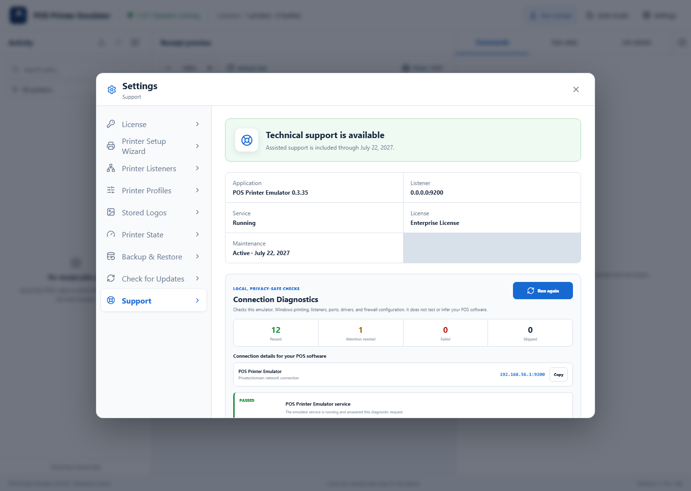
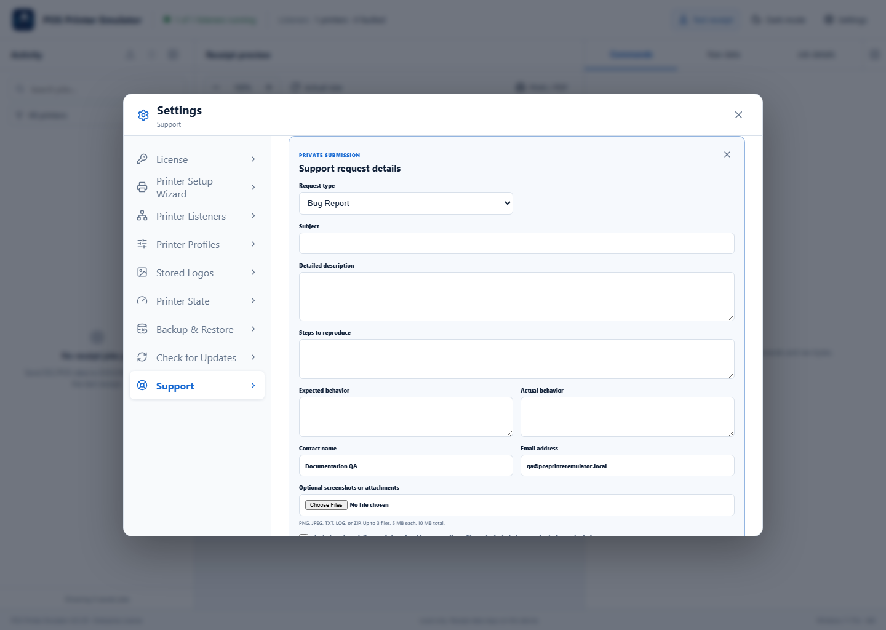
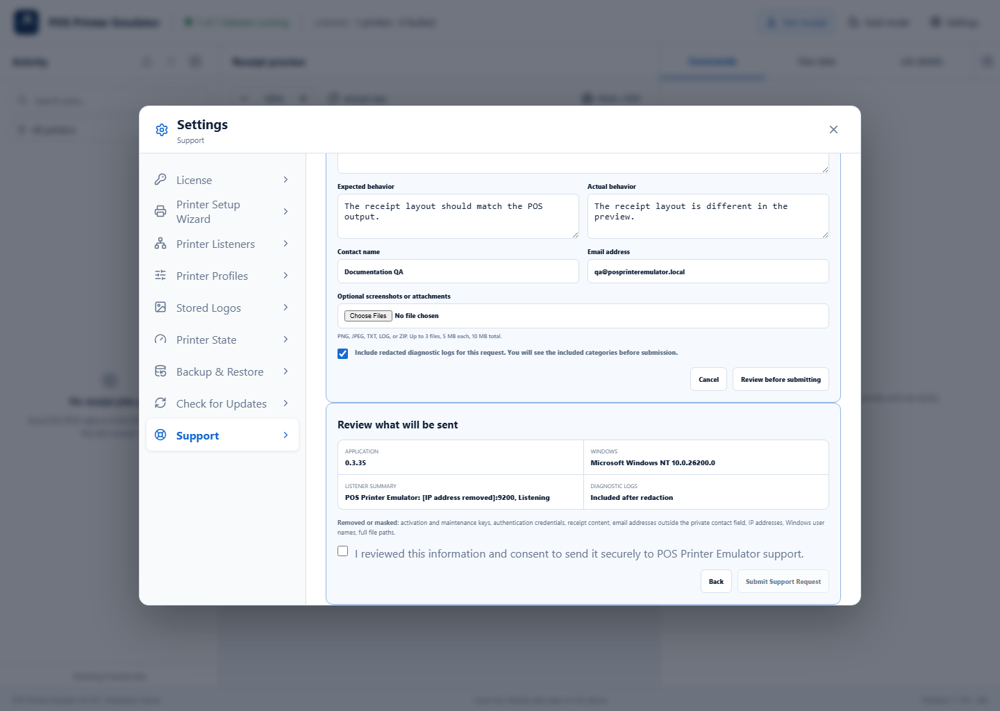

Privacy first: local diagnostics are available even when a license or maintenance problem blocks assisted support. Receipt contents and activation keys are excluded from the support package.
1Run Connection Diagnostics
Open Settings → Support and select Run diagnostics. The checks cover the emulator service, Windows printing, listeners, ports, profiles, drivers, and firewall. They do not inspect or guess the POS software.

2Describe the request
With active maintenance, select Submit a Support Request. Choose Bug Report, Feature Request, License Issue, or Other Issue. Enter a subject, detailed description, reproduction steps when applicable, expected and actual behavior, and contact information. Up to three supported attachments can be included.

3Review exactly what will be sent
Select whether to include redacted diagnostics, then choose Review before submitting. Check the application, Windows and listener summary, attachments, diagnostic choice, and removed or masked categories. Select the consent checkbox only after reviewing the information, then submit.

After submission
- The application displays a confirmation and reference or GitHub issue number.
- A public issue link is shown when available; private attachments are not posted publicly.
- If the computer is offline or submission fails, the protected draft remains available for retry.
Support without active maintenance
You can still run diagnostics, copy the summary, preview the package contents, save the package locally, and use self-service documentation. Renew optional maintenance to restore assisted request submission.